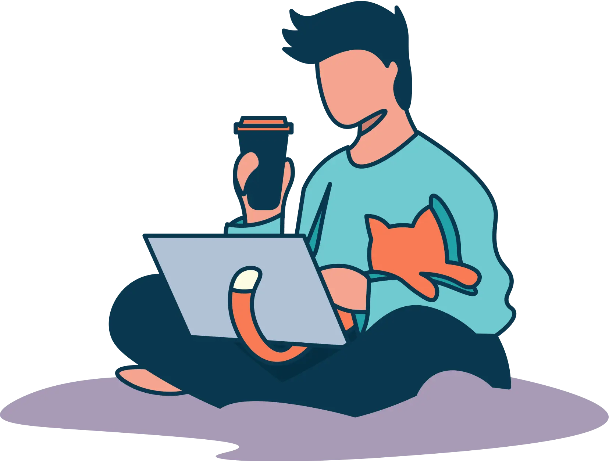
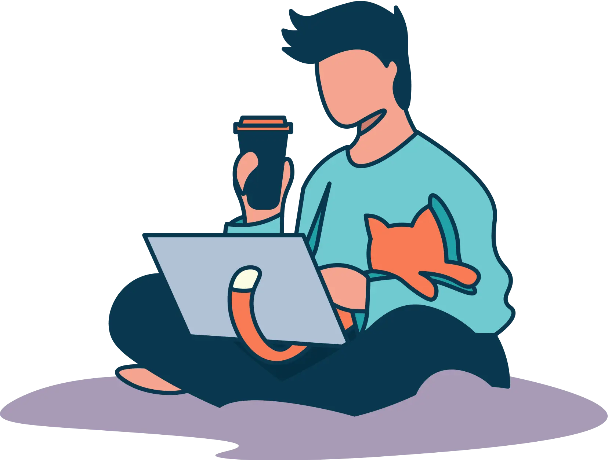

Join us in building Providence's first ever Cat Cafe!
Hi there! We are thrilled to introduce ourselves as Cafe Gato, in the process of opening the first cat cafe in Providence, Rhode Island! Your support and enthusiasm will be instrumental in making this dream a reality, and we couldn't be more grateful to have you along for the ride.
Thank you for being one of the first people to join us on this journey!


 
